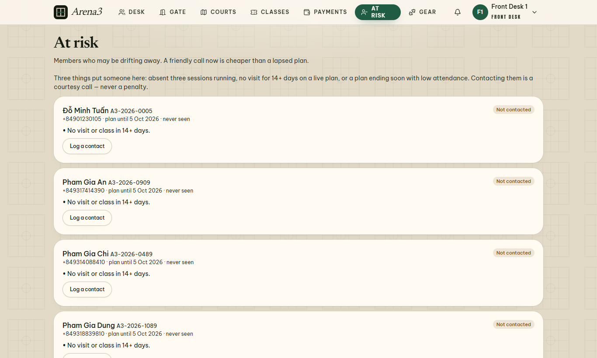
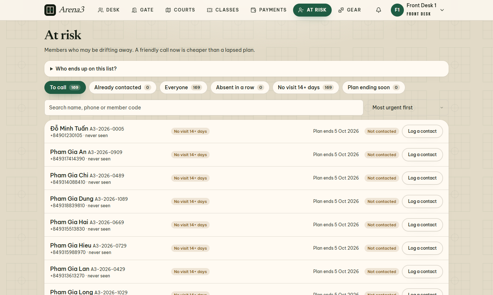
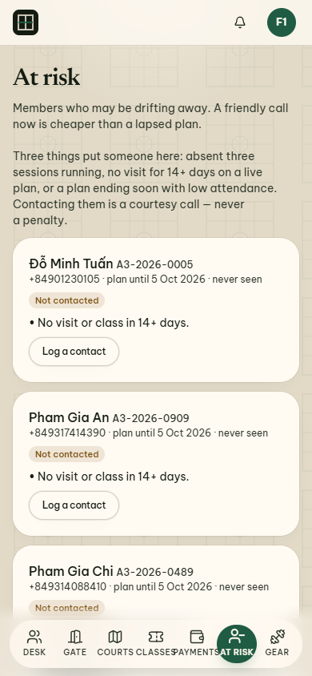
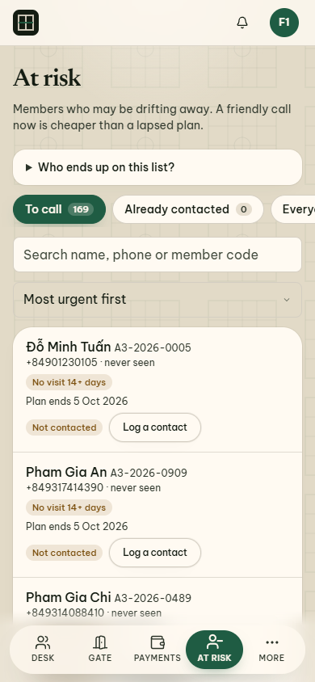
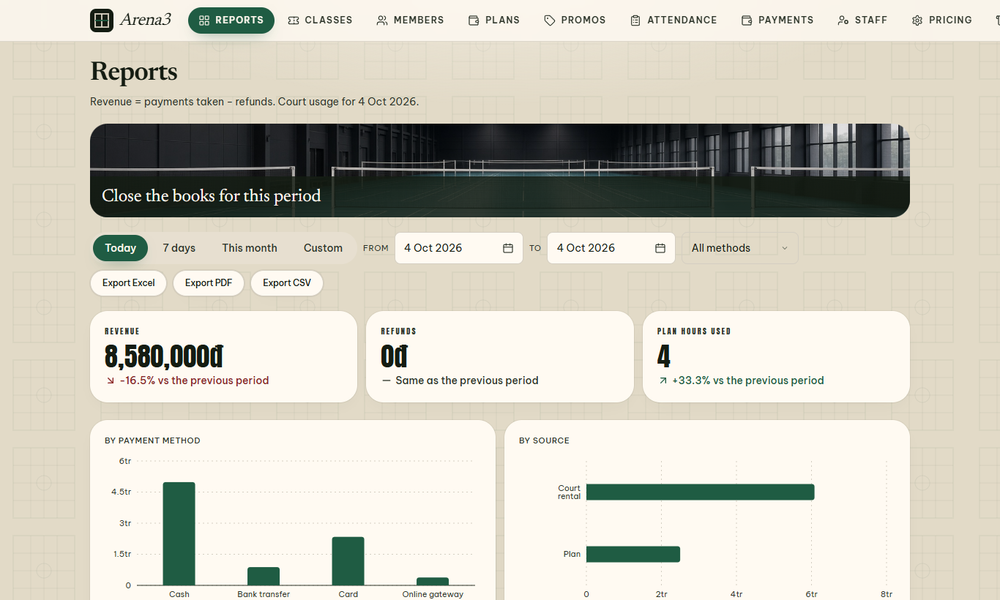
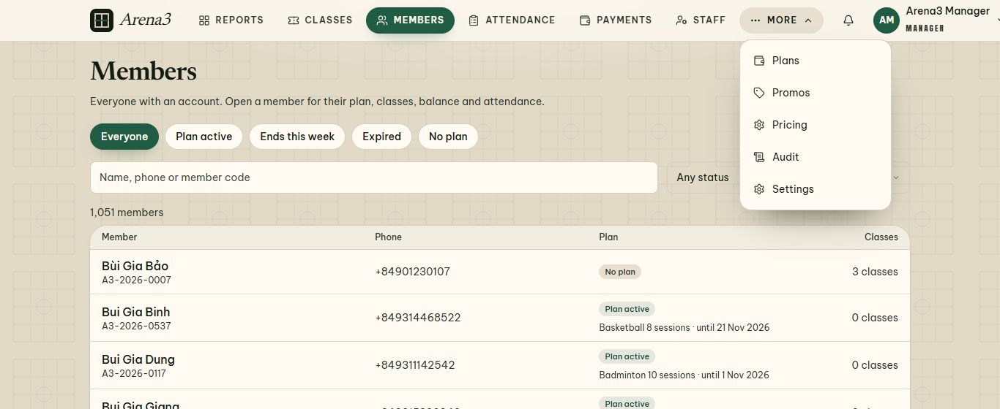
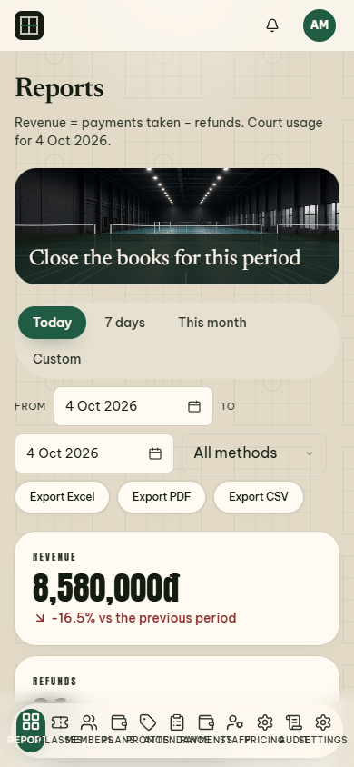
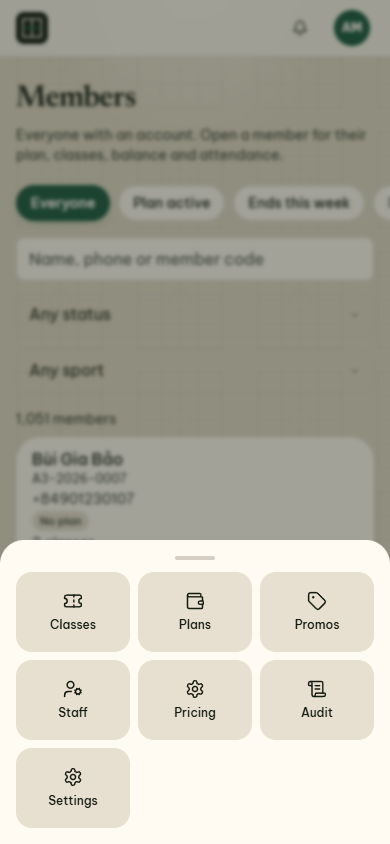
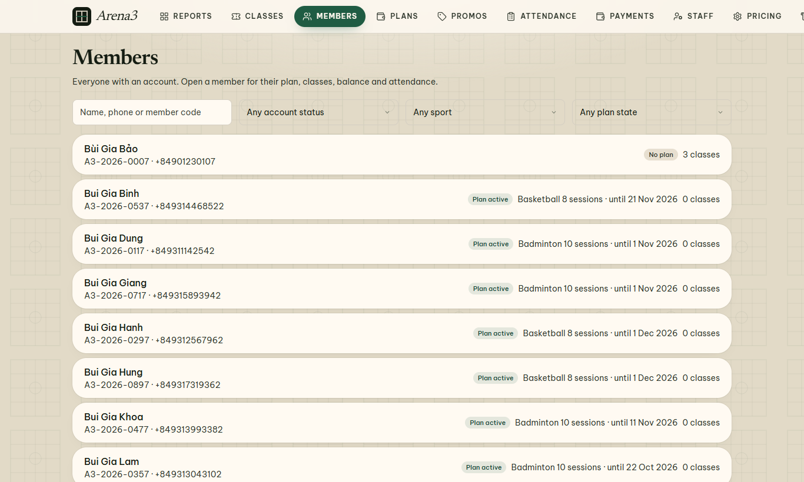
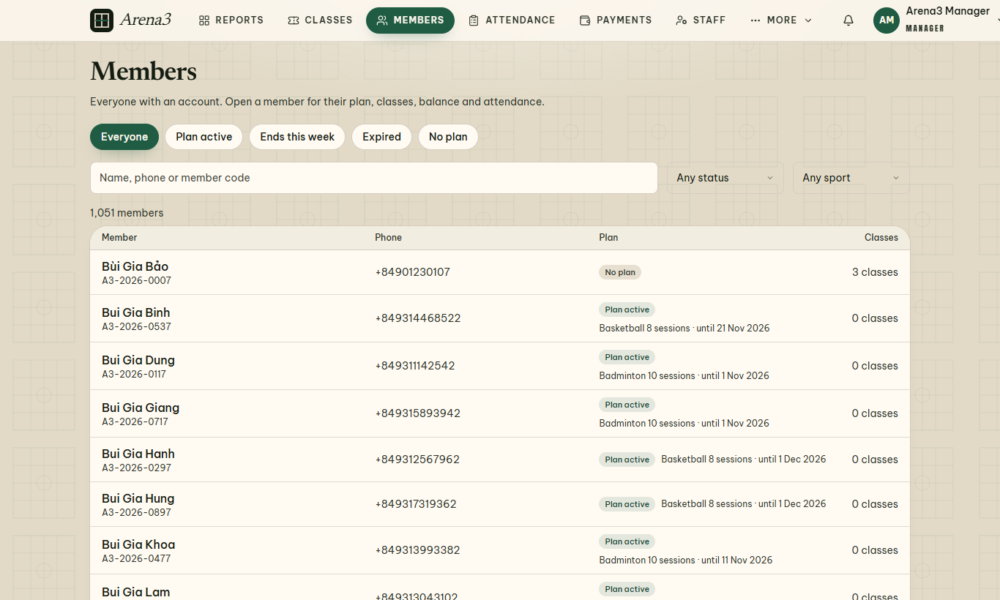

Viết bằng tiếng người, không dùng thuật ngữ · ngày 04/10/2026
Sếp lớn chê: “UI/UX khó nhìn, list dài vô tận, 1000 user”.
Đúng thật. Tụi tao nhét thử 1.051 hội viên vào app để kiểm tra. Màn “At risk” (danh sách hội viên sắp bỏ đi mà lễ tân cần gọi điện) dài tới 27.965 điểm ảnh trên máy tính – phải cuộn khoảng 34 màn hình mới hết. Trên điện thoại còn tệ hơn: 39 màn hình. Không có ô tìm kiếm, không có bộ lọc, không có chia trang. Mỗi người là một cái thẻ to đùng.
Giờ thì: màn đó chỉ còn khoảng 2 màn hình trên máy tính (gọn hơn 16 lần), có ô tìm kiếm, nút lọc kèm con số, và chia trang 20 người một lần.
Menu của quản lý cũng hết bị tràn ra ngoài màn hình. Các màn danh sách dài khác cũng được chia trang.
| Thành viên | Vai | Việc đã làm |
|---|---|---|
| Claude | Trưởng nhóm, người sửa code, người kiểm tra cuối | Tạo dữ liệu 1.051 hội viên giả (chỉ trên máy test), chụp ảnh “trước”, tìm ra thủ phạm, viết code sửa, chụp ảnh “sau”, làm báo cáo này. |
| Grok CLI | Chuyên gia trình bày thông tin (nhìn có gọn, có dễ quét mắt không) | Đề xuất đổi “chồng thẻ” thành “hàng đợi”: dải nút lọc có số đếm, ô tìm kiếm, mỗi người một dòng, chỉ tô màu cam cho người “chưa gọi”. Đề xuất gom menu quản lý còn 6 tab + “More”. |
| Antigravity CLI | Chuyên gia trải nghiệm người dùng, điện thoại và dễ dùng | Đề xuất chia trang (không cuộn vô tận), nút bấm đủ to cho ngón tay, menu dưới đáy điện thoại tối đa 4–5 nút + ngăn kéo “More”, tách danh sách hóa đơn khỏi việc cần xử lý. |
Cả hai đồng ý một điều: không dùng cuộn vô tận. Nhân viên đang bận mà mất chỗ đang xem thì rất bực.
Đây là danh sách hội viên lâu không đến tập hoặc sắp hết gói. Lễ tân dùng nó để gọi điện hỏi thăm.




Chia trang: mỗi trang 20 người, cuối trang có “Showing 1–20 of 169 · Page 1 of 9 · Previous / Next”. 1.000 người = 50 trang nhỏ, thay vì một dải dài vô tận.
Quản lý có tới 11 tab xếp một hàng nên rất chật. Lễ tân thì chữ “At risk” bị rớt thành hai dòng.




Màn này đã có chia trang từ trước, nhưng nhìn nặng nề: mỗi người một thẻ dày, bộ lọc là 4 ô chọn xổ xuống.


Đo bằng chiều cao cả trang (điểm ảnh). Một màn hình máy tính ≈ 820, điện thoại ≈ 844.
| Màn hình | Thiết bị | Trước | Sau | Kết quả |
|---|---|---|---|---|
| At risk | Máy tính | 27.965 (≈34 màn) | 1.736 (≈2 màn) | Ngắn hơn 16 lần |
| At risk | Điện thoại | 32.821 (≈39 màn) | 3.688 (≈4,4 màn) | Ngắn hơn 8,9 lần |
| Payments (biên lai) | Máy tính | 4.838 | 1.886 | Ngắn hơn 2,6 lần |
| Payments (biên lai) | Điện thoại | 9.272 | 3.472 | Ngắn hơn 2,7 lần |
| Members | Điện thoại | 4.589 | 3.831 | Ngắn hơn ~17% |
| Members | Máy tính | 2.213 | 2.010 | Ngắn hơn ~9% |
Nói thật, chưa làm hết:
⚠ Một chuyện cần biết (không liên quan giao diện):
Trong lúc test, máy làm việc đang trỏ nhầm vào cơ sở dữ liệu thật (production), nên 12 hội viên thử nghiệm (mã A3-2026-0064 đến 0075) và vài giao dịch tiền mặt thử đã bị ghi vào đó. Chưa xóa gì cả – cần bạn đồng ý rồi mới dọn. Từ lúc phát hiện, mọi test đều chạy trên dữ liệu giả ở máy riêng.